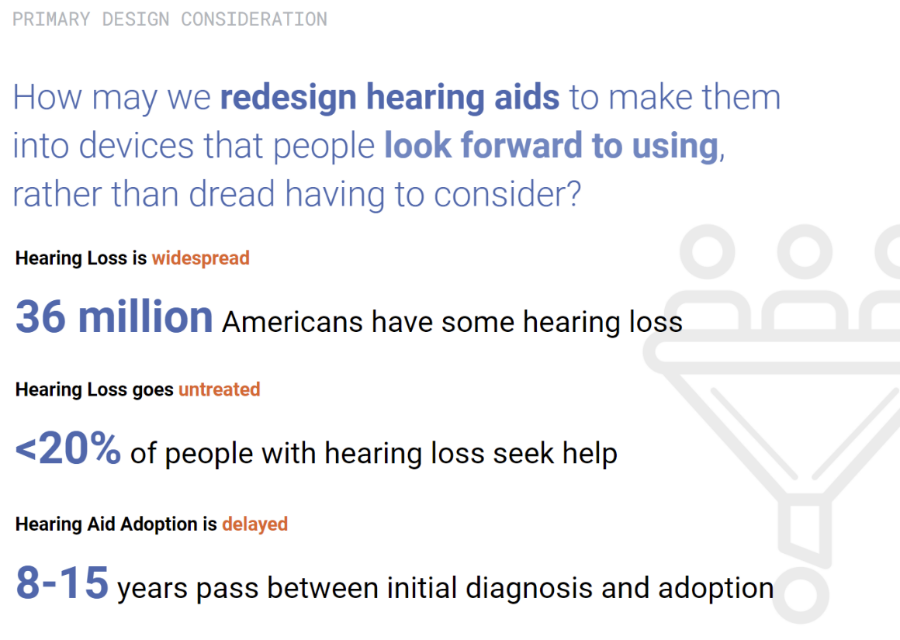

LISTENING IN
Design Research
AN EXPLORATION OF FORM FOR HEARING AID DESIGN
SPRING 2022
Thesis Advisor: Marcelo Coelho
Motivated to inspire more proactive hearing aid
adoption and retention, this thesis explores how to
generate new forms for OTC hearing aids design
centered around the lifestyles of its users. Strategies
utilized for finding inspiration for new forms
included understanding the opportunity gap within
the hearable category and exploring the opinions
surrounding existing hearable forms.

Learning from the source
Input was gathered from makers, wearers, and
viewers of hearing aids via surveys, interviews, and
co-design sessions. The output was key learnings
which were synthesized into a set of design
considerations and a new design method for
generating hearing aid forms.

Key learnings from these interactions can be summarized by these five points:
- Insight 1: It's not always hesitancy, there is also anticipation. Users are waiting for the next best thing
- Insight 2: People want 'cool,' but hearing aids as earbuds are not an end-all solution.
- Insight 3: Hearing aids are designed to do one thing, but should be more than communication devices
- Insight 4: There is no silver bullet. There is room for variety
- Insight 5: No need for reinvention. Over-the-ear is a great form factor with implementation issues
A User-Centered OTC Hearing Aid Design Method
The next step was to transform these key learnings into actionable prompts that could help a designer ideate new forms. The learnings were generalized into design considerations to plug into a formal design method

The two example implementations are designs that are not only visually
evocative but have functions that assist in and bring delight to the many
"jobs to be done" in their daily lives.
Hearing aids solely designed for communication have failed to capture the
hearts of prospective users. These prospective users have been deterred
by a perceived lack of added value hearing aids bring in exchange for their
maintenance and cost. Exploring hearing aid form and the potential added
function they may contribute can be the added value these wearers seek.